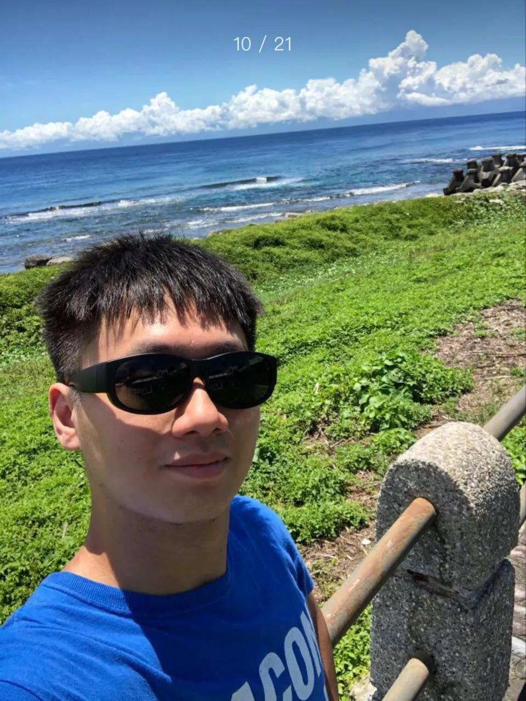
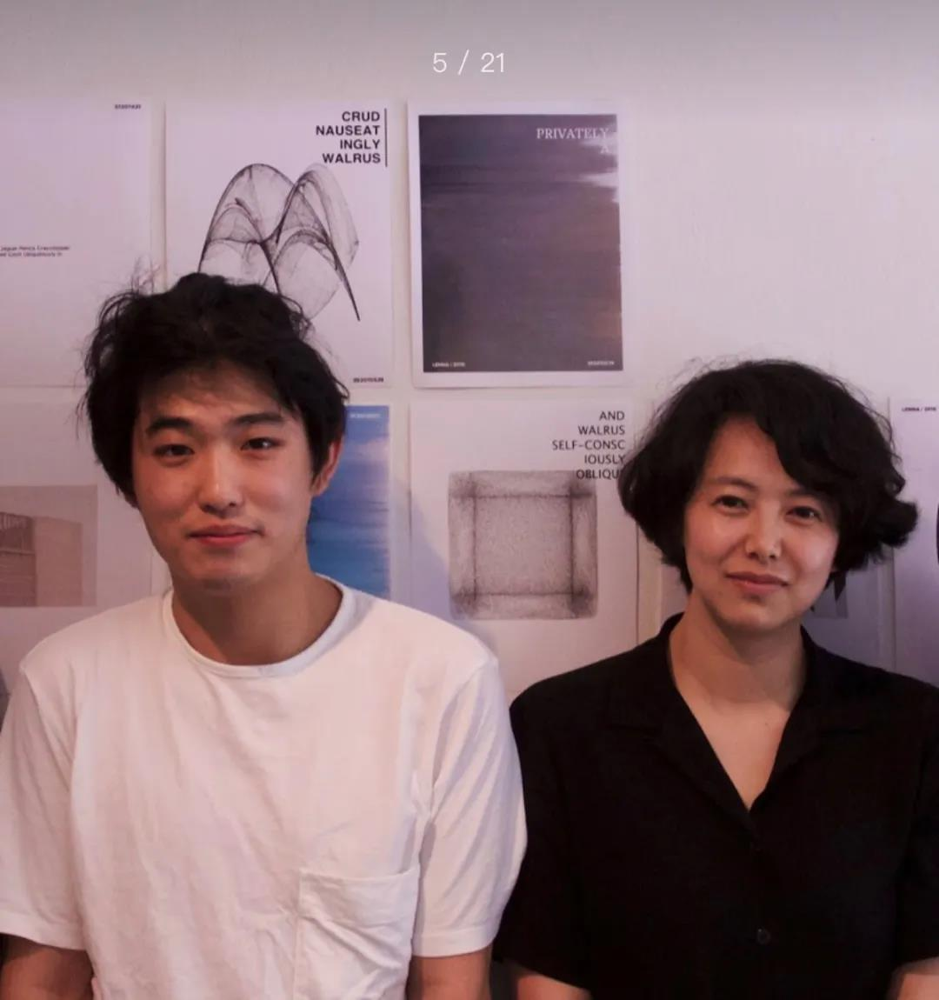
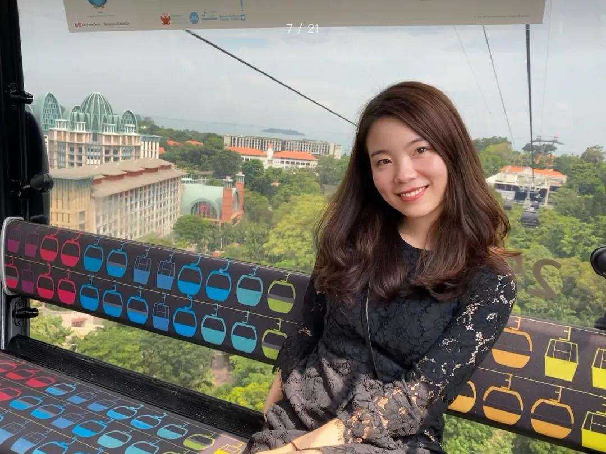
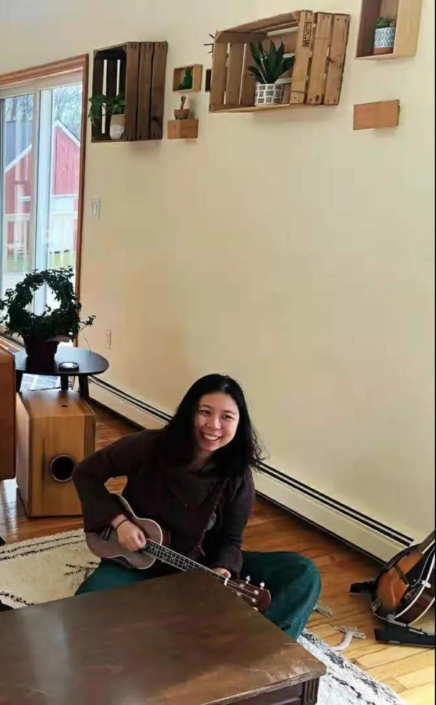
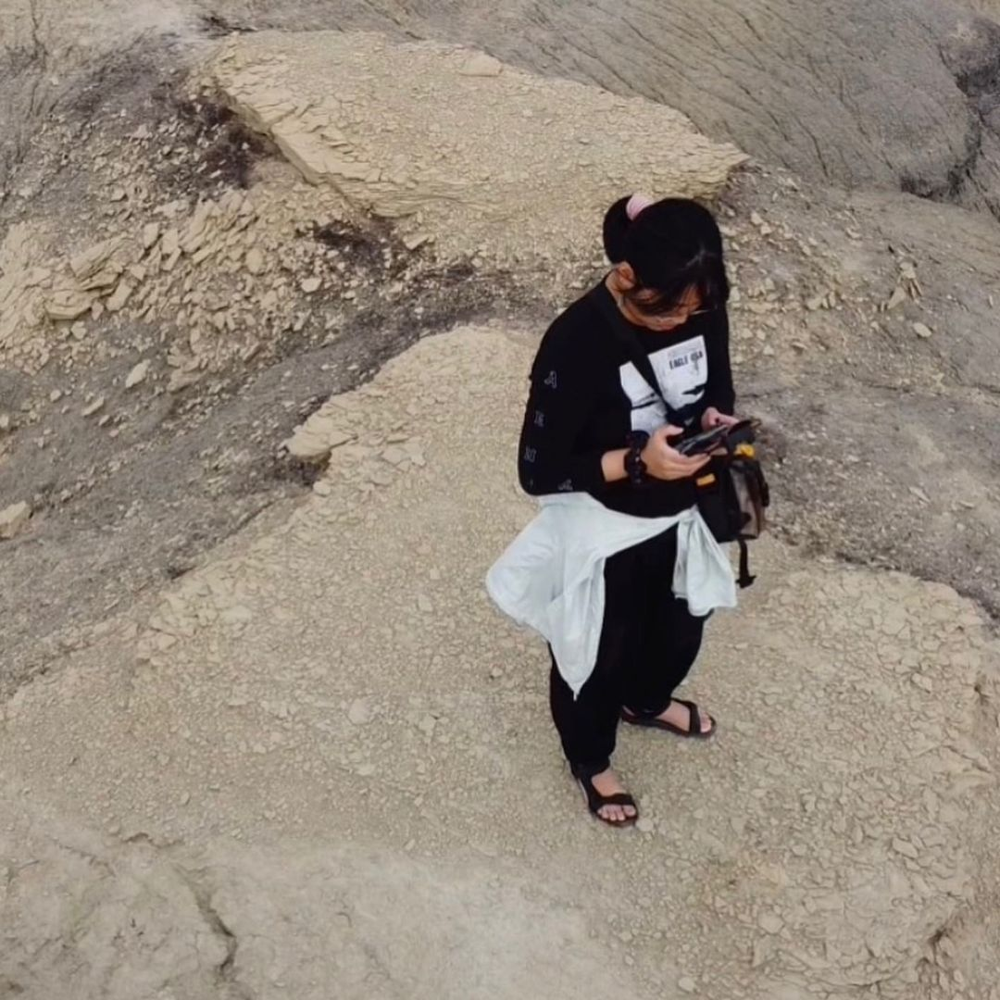
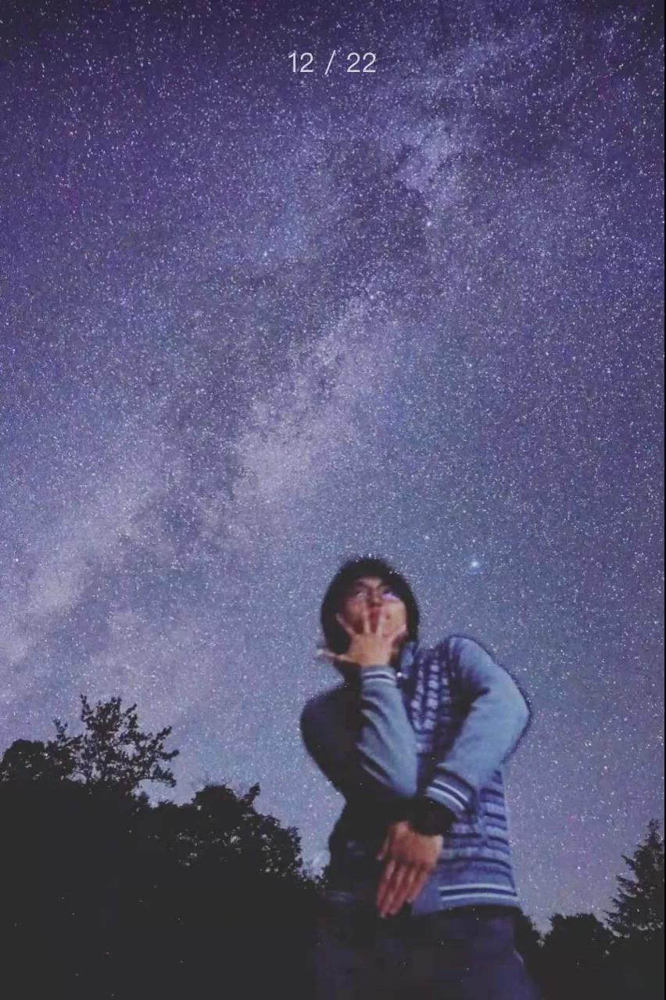

Member
-
阿诗 | Ashi
生活现场的喜剧演员，Mental Health Counseling在读。喜欢写作，跳舞，看树。
-
Alan | Dongke Tu
留美青年音乐人，指挥，当代与后现代哲学学者，艺术活动家，路标Pathmark常任讲师。2017年获得武汉大学哲学与经济双学士学位，2020年取得美国杜肯大学 (Duquesne University) 哲学硕士学位，目前就读于美国纽约州立大学石溪分校 (SUNY Stony Brook) 音乐博士项目，创作、表演与研究领域主要涵盖现当代交响音乐、声音艺术、实验、现象学与后现代、世界音乐等。
-
程杳 | Chengyao
本科毕业于上海交大，博士毕业于新加坡国立，现在加州硅谷从事deep learning相关工作，去过三次火人节(Burning Man)。对实验型社会+共识社区+ 可持续建筑+数字游民等相关话题也都感兴趣。最近在探索筹备706纽约和湾区的活动/线下空间。
-
 Clear
Clear
706纽约“心理”主题月 — 9/11 戏剧疗愈入门工作坊 分享者Clear：德州大学奥斯汀分校商科本科，纽约大学戏剧治疗硕士。塔罗占卜师，灵性表达者。
-
 Daniel
来自台北，为本文案的作者。具有麻州州立大学 MBA 与 Business Analytics双硕士学位，喜爱学习，更喜欢挑战极限运动，如蹦极，滑翔伞。
-
 二猫教授aka花总
二猫教授aka花总
06纽约生活实验室 — 8/13-8/16沙发客 二猫教授aka花总：布朗大学人类学，喜欢走路>骑车>公交车>火车>地铁>开车
-
Feiyue
成都人，就读于麻省理工学院建筑学院，研究生念城市学（urbanism）方向。此前和朋友一块儿创建过沙丘研究所和空地实验室，也一直是沙丘研究所的主要创作者之一，关心的话题包括城市设计、公民文化、集体记忆、互联网平台等。对文学很着迷。
-
Hedy
Hedy，金融从业者，INFJ，心理学、社会学、哲学爱好者，易学和占星初学者，喜欢旅行、跳舞、烹饪和认识新朋友～
-
Helen
来纽约寻找passion的超龄儿童。业余stylist，翻唱能手，ktv里最亮的那颗星（不服来战），photo-taker（iphone only），创意小匠，取名大师。
-
 黄瓜 & 贞贞 | Huang Gua & Zhen zhen
黄瓜做creative dev的day job，贞贞在哥大教育学博士最后一年，两人一起合作做当代艺术，同时试运营他们自己的交互艺术和游戏设计工作室。最近几年着重做写作，做研究，做展览。
-
 Hannah
记者，在纽约生活六年，本科和研究生均毕业于纽约大学。秉承对写作的热爱，两年前从数学/经济方向转读新闻，从此成为纸媒的拥趸。理科生中的文科生，文科生中的理科生，偶尔也能当个不唱歌不画画的艺术生。
-
 Henry
Henry
706纽约生活实验室 10/2-10/4沙发客，刘鹤晨Henry：文化人类学学生，暑假在上海快动迁的工人小区里做田野调查，收集各种被人丢弃的家当，跟拾荒者大叔学习怎么靠卖破烂赚钱。
-
 Jun
Jun
706纽约“心理”主题月 — 9/11 戏剧疗愈入门工作坊 分享者Jun：纽约大学戏剧治疗硕士，西雅图华盛顿大学心理系本科。个人身心灵成长的推行者和探索者。
-
 Junjie
Junjie
Junjie, a beginner, a leaner, a tutor, a volunteer, a runner, a yogi, an ordinary gay.
-
Judy
纽约城市大学研究中心计算化学博士，从事生物分子抗药和光催化相关的研究。喜欢探索生活，喜欢旅游，喜欢结交江湖各路朋友，喜欢自省并记录博客。最近开始写连载小说。也开始刷题准备找工作。
-
Juliette
正经身份是社会学博士在读，不务正业的时候是个摄影师，但内心深处还是想考古。拥有巨大的好奇心，喜欢探索学习新鲜事物。希望706的到来可以让纽约这座城市更加有趣，并且激发出在纽约的年轻人的无限可能。
-
 李枝蔚 | Lychee
706生活实验室 9/30-10/2沙发客，荔枝味，纽约706客厅发起人，热爱并需要打破边界、真诚交流的人类。纽约大学神经科学/认知科学博士刚毕业（失业），正在寻找什么样的工作可以让科技帮助美好生命。也在探索：身体觉察与学习/生命教育课程/亲密关系/科学社会学。目前山居科罗拉多某小镇并承担纽约朋友们的旅游接待任务。
-
刘果 | Liu Guo
Matters Lab联合创始人与技术负责人. 曾在北大学习生态学，在加州大学尔湾分校学习地球系统科学。原甲骨文高级软件工程师，706孵化“视角”杂志创始人。
-
 Lucy
在新泽西生活了11年。会画点画，会点代码，对户外活动非常感兴趣，希望能够建造一个有生活感幸福感的共享空间。喜欢做白日梦，和朋友漫无目的的散步，每月捐一笔钱。
-
Mao
MIT Sloan PhD 在读，此前一直学习和从事计算机专业。对跨学科研究感兴趣，希望能在706认识各行各业的朋友，一起探索如何更清晰地认识这个世界，如何运用所学更有效地参与公益。
-
 Rashel
Rashel
706纽约生活实验室 — 8/30-9/1 沙发客Rashel：无特定标签，大概是横跳专业户：以前整供应链，后来弄艺术展，近期在做游戏和探索ACG文化，并持续写作与编辑文本。
-
卫一 | Weiyi
临床心理学博士在读，明年会在布鲁克林一家大学咨询中心实习。爱好跳舞、写作、观影、与人交流，对人文社科普遍有兴趣，本科时选修了许多外院系的课程。有自己的自媒体账号，会不定期更新读博生活感想及心理咨询相关文章。
-
 温娉 | Wendy
温娉 | Wendy
在费城附近的一所文理学院读数学，辅修认知科学和城市研究。喜欢观察研究人们的人格、情绪、决策，以及空间如何给人们带来不同的感受、促进人与人之间不同的交互模式。
-
肖予飞
706纽约生活实验室 - 8/13-8/15 沙发客 肖予飞：在minerva university学人机互动，喜欢柏林、徒步、自给自足社区生活方式、和新老朋友一起做大餐和画画。
-
 荧惑 | Yinghuo
刚上完NYU的准湾区电子工程师/码农，不务正业的Engineering Nerd，祖传看星星爱好者。对生活中绝大部分事物报以不紧不慢的好奇与热情，着迷于各种能带给人以广义上自由的技术与生活范式。热爱并永远期待与所有人真诚对话。